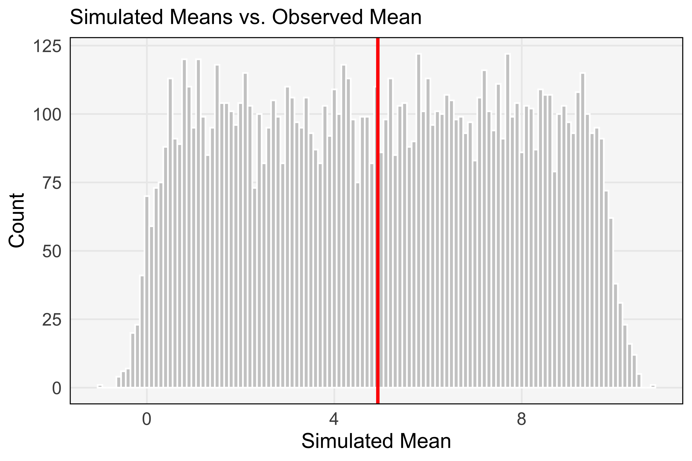
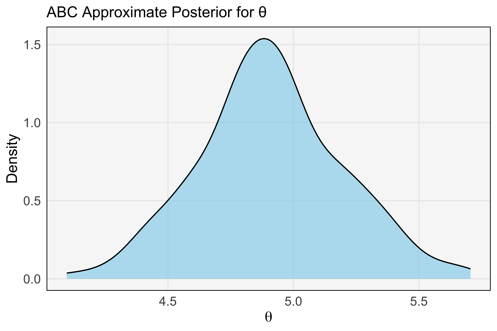
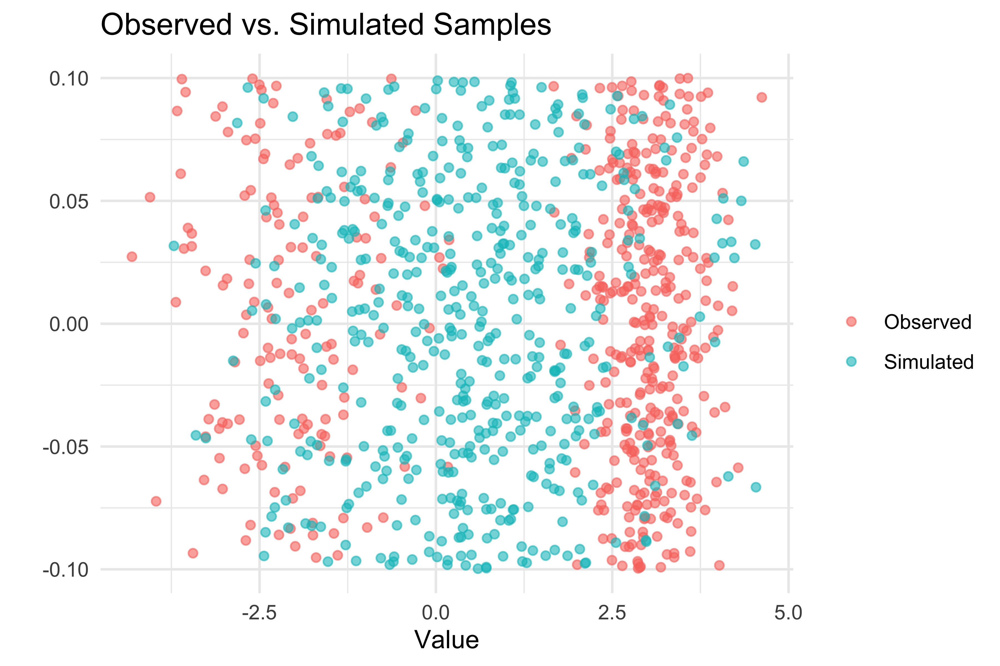

11 Likelihood-Free Inference via Classification
Gutmann, M. U., Dutta, R., Kaski, S., & Corander, J. (2018). Likelihood-Free Inference via Classification. Statistics and Computing.
11.1 Motivation
- Many complex simulators → no tractable likelihood
- Approximate Bayesian Computation (ABC) sidesteps likelihood by simulating and comparing summaries
- But choosing summaries and distance thresholds is ad hoc
- Gutmann et al. (2018) propose learning a classifier to distinguish observed vs. simulated and use its outputs for inference
11.2 Likelihood-Free Inference: The Big Picture
- Generative model \(p(x\mid\theta)\) is a black-box simulator
- Observed data \(x_{\rm obs}\)
- Goal: Approximate \(p(\theta\mid x_{\rm obs})\) without ever evaluating \(p(x\mid\theta)\)
11.3 What is ABC?
- Approximate Bayesian Computation (ABC)
- A likelihood‐free inference method
- Replace an intractable likelihood with simulation + summary statistics
- Accept parameter draws that produce simulated data “close” to the observed data
11.4 When to Use ABC
- Complex generative models with intractable or expensive likelihoods
- Examples: population genetics, epidemiology, systems biology
- Enables Bayesian inference without ever evaluating \(p(x\mid\theta)\)
11.5 The ABC Rejection Algorithm
# Observed summary statistic
s_obs <- summary_statistic(x_obs)
# Rejection ABC
accepted <- numeric()
for (i in seq_len(N)) {
theta_i <- sample_prior()
x_sim <- simulator(theta_i)
s_sim <- summary_statistic(x_sim)
if (abs(s_sim - s_obs) < epsilon) {
accepted <- c(accepted, theta_i)
}
}
posterior_samples <- accepted11.6 Illustrated Example: Estimating a Mean
set.seed(42)
# 1. Observed data
x_obs <- rnorm(50, mean = 5, sd = 2)
s_obs <- mean(x_obs)
# 2. Simulate candidates
thetas <- runif(10000, 0, 10)
sims <- sapply(thetas, function(theta) mean(rnorm(50, theta, 2)))
df <- data.frame(theta = thetas, s_sim = sims)# 3. Histogram of summary statistics
ggplot(df, aes(x = s_sim)) +
geom_histogram(binwidth = 0.1, fill = "gray80", color = "white") +
geom_vline(xintercept = s_obs, color = "red", size = 1) +
labs(
title = "Simulated Means vs. Observed Mean",
x = "Simulated Mean",
y = "Count"
)
11.7 Acceptance Threshold Visualization
epsilon <- 0.1
df$accepted <- abs(df$s_sim - s_obs) < epsilon
ggplot(df, aes(x = theta, y = s_sim, color = accepted)) +
geom_point(alpha = 0.5) +
scale_color_manual(values = c("FALSE" = "gray70", "TRUE" = "steelblue")) +
geom_hline(yintercept = s_obs, linetype = "dashed") +
labs(
title = "ABC Acceptance Region",
x = expression(theta),
y = "Simulated Mean",
color = "Accepted"
)11.8 ABC Approximate Posterior
post <- df$theta[df$accepted]
ggplot(data.frame(theta = post), aes(x = theta)) +
geom_density(fill = "skyblue", alpha = 0.6) +
labs(
title = "ABC Approximate Posterior for θ",
x = expression(theta),
y = "Density"
)
11.9 Extensions of ABC
- ABC‐SMC: Sequential Monte Carlo to adaptively reduce \(\varepsilon\)
- ABC‐MCMC: MCMC scheme with ABC acceptance step
- Regression Adjustment: post‐processing to correct bias in posterior
11.10 References about ABC
- Beaumont, M. A., Zhang, W., & Balding, D. J. (2002). Approximate Bayesian computation in population genetics. Genetics, 162(4), 2025–2035.
- Marin, J.-M., Pudlo, P., Robert, C. P., & Ryder, R. J. (2012). Approximate Bayesian computational methods. Statistics and Computing, 22(6), 1167–1180.
- Sisson, S. A., Fan, Y., & Beaumont, M. (2018). Handbook of Approximate Bayesian Computation. CRC Press.
11.11 Classification-Based LFI
- Simulate \(\{\theta_i,\,x_i\}\) from the prior and simulator
- Label data:
- \(y=1\) for \(x_i\sim p(x\mid\theta_i)\) close to \(x_{\rm obs}\)
- \(y=0\) for simulated from other \(\theta\)
- \(y=1\) for \(x_i\sim p(x\mid\theta_i)\) close to \(x_{\rm obs}\)
- Train a discriminator \(D(x)\approx P(y=1\mid x)\)
- Use \(D(x_{\rm obs})\) (or its logit) as a surrogate likelihood
11.12 Algorithm Sketch
Pseudo-code:
for (t in 1:T) {
θ_samples <- sample_prior(N)
x_sims <- simulator(θ_samples)
y_labels <- ifelse(distance(x_sims, x_obs) < ε_t, 1, 0)
D_t <- train_classifier(x_sims, y_labels)
# Use D_t to weight or propose new θ in SMC/PMC scheme
}11.13 Motivation
- Many complex simulators → no tractable likelihood
- Approximate Bayesian Computation (ABC) sidesteps likelihood by simulating and comparing summaries
- Manual choice of summaries and thresholds can be ad hoc
- Gutmann et al. (2018) propose using a classifier to distinguish observed vs. simulated, turning that into a discrepancy
11.14 Likelihood-Free Inference: The Big Picture
- Simulator: black-box generative model \[p(x \mid \theta)\]
- Observed data: \[x_{\mathrm{obs}}\]
- Goal: Approximate posterior \[p(\theta \mid x_{\mathrm{obs}})\] without evaluating \[p(x \mid \theta)\]
11.15 Classification-Based LFI
- Draw \((\theta_i, x_i)_{i=1}^N\) from the prior and simulator
- Label each \(x_i\):
- \(y_i = 1\) if \(x_i\) is “close” to \(x_{\mathrm{obs}}\)
- \(y_i = 0\) otherwise
- Train classifier \(D(x)\approx P(y=1 \mid x)\)
- Use classifier output \(D(x_{\mathrm{obs}})\) or its logit as a surrogate likelihood
11.16 Algorithm Sketch
Pseudocode
for (t in seq_len(T)) {
theta <- sample_prior(N)
x_sim <- simulator(theta)
y <- as.integer(distance(x_sim, x_obs) < eps[t])
D <- train_classifier(x_sim, y)
# Use D to weight or propose new theta in an SMC/PMC loop
}11.17 Example: 1D Gaussian Mixture
set.seed(123)
n <- 500; p <- 0.3
# Observed: two-component Gaussian mixture
obs <- data.frame(
x = c(rnorm(n*p, -2, 1),
rnorm(n*(1-p), 3, 0.5)),
label = "Observed"
)
# Simulated under wrong single-Gaussian model
sim <- data.frame(
x = rnorm(n, 0.5, 1.5),
label = "Simulated"
)
df <- rbind(obs, sim)# Scatter plot
library(ggplot2)
ggplot(df, aes(x = x, y = 0, color = label)) +
geom_jitter(height = 0.1, alpha = 0.6) +
theme_minimal() +
labs(title = "Observed vs. Simulated Samples",
x = "Value", y = "", color = "")
11.17.1 Example: Logistic Discriminator
\[ D(x) = \mathrm{logit}^{-1}\bigl(\beta_0 + \beta_1 x\bigr) \]
# Fit logistic regression
df$y_bin <- ifelse(df$label == "Observed", 1, 0)
fit <- glm(y_bin ~ x, data = df, family = binomial)
# ROC curve
library(pROC)
probs <- predict(fit, type = "response")
roc_obj <- roc(df$y_bin, probs)
auc_val <- auc(roc_obj)
# Plot ROC
roc_df <- data.frame(
fpr = rev(roc_obj$specificities),
tpr = rev(roc_obj$sensitivities)
)library(ggplot2)
ggplot(roc_df, aes(x = fpr, y = tpr)) +
geom_line(linewidth = 1) +
geom_abline(lty = 2) +
theme_minimal() +
labs(title = sprintf("ROC Curve (AUC = %.2f)", auc_val),
x = "False Positive Rate",
y = "True Positive Rate")11.18 Applications & Case Studies
- Population genetics: coalescent simulators for demographic inference
- Systems biology: stochastic models of biochemical networks
- Epidemiology: agent-based epidemic simulators
11.19 Practical Tips
- Classifier choice:
- Logistic regression for speed
- Random forests / GBMs for nonlinearity
- Neural nets for high-dimensional data
- Logistic regression for speed
- Features: raw data vs. summary statistics
- Simulation budget: trade-off between classifier accuracy and compute cos
- Sequential schemes: embed into SMC-ABC to adapt \(\varepsilon\)
11.20 Advantages & Limitations
| Pros | Cons |
|---|---|
| Automatic, data-driven discrepancy | Classifier may fit simulator quirks |
| Continuous distance (AUC, logit) | Extra training overhead |
| Integrates into ABC/SMC frameworks | Requires careful label calibration |
11.21 Summary & Outlook
- Classification reframes ABC as a supervised learning problem
- Provides continuous, interpretable discrepancy measures
- Future directions:
- Deep architectures for high-dimensional simulators
- Amortized inference for rapid repeated queries
- Hybrid likelihood-based & classification approaches
- Deep architectures for high-dimensional simulators
11.22 References
- Gutmann, M. U., Dutta, R., Kaski, S., & Corander, J. (2018). Likelihood-Free Inference via Classification. Statistics and Computing.
- Cranmer, K., Brehmer, J., & Louppe, G. (2020). The Frontier of Simulation-Based Inference. PNAS.
- Papamakarios, G. & Murray, I. (2016). Fast ε-Free Inference of Simulation Models with Bayesian Conditional Density Estimation. NeurIPS.
- Gutmann, M. U. & Hyvärinen, A. (2012). Noise-Contrastive Estimation: A New Estimation Principle for Unnormalized Statistical Models. AISTATS.